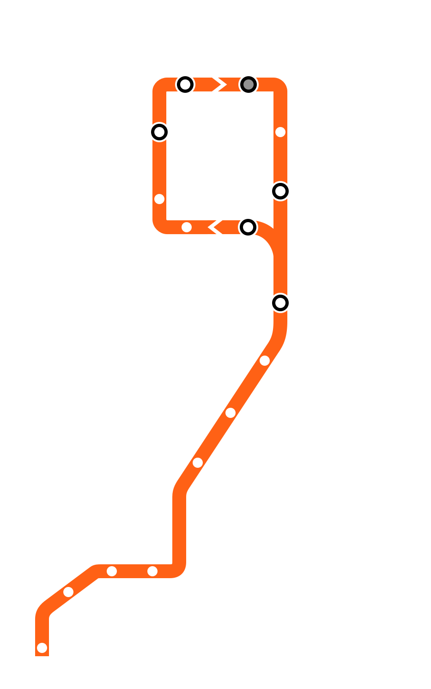

Week 12 (CS 418 @ UIC)
Week 12 Slide Deck
Intro to Network Analysis
Jack Bandy 2026
Topic Title Placeholder
CS 418 · Week 12 · 🟠 35th/Archer 🟠
What is a Graph?
A graph represents objects and relationships
- \(G = (V, E)\)
- \(V\) = vertices (objects)
- \(E\) = edges (relationships)

Social network graph (placeholder)
Graph Applications
Graphs model many real-world systems:
- World Wide Web
- Social networks
- Transportation networks
- Computer networks
Graph applications (placeholder)
Graph Terminology
Key concepts:
- Endpoints: Vertices connected by an edge
- Adjacent: Vertices connected by an edge
- Degree: Number of edges on a vertex
- Self-loop: Edge from vertex to itself
Graph terminology (placeholder)
Adjacency Matrix
Matrix representation of graphs
- Efficient for dense graphs
- Easy to check connections
Adjacency matrix example (placeholder)
Types of Graphs
Three important types:
- Directed: Edges have direction
- Weighted: Edges have values
- Attributed: Nodes have properties
Graph types (placeholder)
Community Detection
Finding groups in networks
- Communities = densely connected groups
- Sparse connections between groups
- Social groups in social networks
Community detection (placeholder)
Goodness Metrics
Measuring community quality
Density: Ratio of actual to possible edges
\[\frac{2E_s}{S(S-1)}\]
Conductance: Fraction of edges leaving
\[\frac{O_s}{2E_s + O_s}\]
Modularity concept (placeholder)
Modularity
Most popular community detection metric
- Actual edges − Expected edges
- Higher Q = better communities
- Maximizing Q is NP-complete
Modularity visualization (placeholder)
Louvain Method
Greedy modularity optimization
- Start with each node as community
- Move nodes to maximize Q
- Aggregate communities into supernodes
- Repeat until convergence
Community detection (placeholder)
Network Diffusion
How events spread through networks
Key questions:
- Will it spread?
- Which nodes to target?
- How to stop it?
Simple network (placeholder)
Broadcast vs. Viral
Two ways content reaches a crowd (Goel et al. 2016)
- Broadcast: one source reaches many directly (e.g. a front page, the Super Bowl)
- Viral: person-to-person, over many generations
- Real cascades mix the two
Broadcast (shallow) vs. viral (deep) diffusion trees (placeholder)
Structural Virality
A single number for tree shape (Goel et al. 2016)
Average distance between all pairs of nodes in a diffusion tree (the Wiener index):
\[\nu(T) = \frac{1}{n(n-1)} \sum_{i=1}^{n} \sum_{j=1}^{n} d_{ij}\]
- \(\nu(T) \approx 2\): pure broadcast (a star)
- Large \(\nu(T)\): deep, multigenerational spread
Diffusion tree with pairwise distances (placeholder)
What Spreads Online?
~1 billion Twitter diffusion events (Goel et al. 2016)
- Over 99% of cascades die in one generation
- Virality varies widely (no “tipping point”)
- Popularity is driven mostly by the largest broadcast
Distribution of cascade sizes and structural virality (placeholder)
Virus Propagation Models
VPMs simplify disease spread
- How virulent?
- Recovery rate?
- Immunity?
- Immunity duration?
SIS model (placeholder)
\(SIS\) Model
Susceptible → Infected → Susceptible
- Example: flu
- \(\beta\) = transmission probability
- \(\delta\) = healing probability
- No immunity
SIS model diagram (placeholder)
\(SIR\) Model
Susceptible → Infected → Recovered
- Example: mumps
- \(\beta\) = transmission probability
- \(\delta\) = healing probability
- Life-time immunity
SIR model diagram (placeholder)
\(SIRS\) Model
Temporary immunity
- Example: whooping cough
- \(\gamma\) = immunity loss probability
- Immunity wears off over time
SIRS model diagram (placeholder)
\(SEIV\) Model
Most complex VPM
- E = Exposed (incubation)
- V = Vaccinated
- \(\varepsilon\) = virus maturation
- \(\theta\) = vaccination rate
SEIV model diagram (placeholder)
Epidemic Threshold
Critical point for virus spread
\[s = \lambda_1 \cdot C_{VPM}\]
- \(s < 1\): Virus dies out
- \(s > 1\): Epidemic spreads
- \(\lambda_1\) = network connectivity
Epidemic threshold (placeholder)
Network Connectivity
Why spectral radius matters
- Average degree ignores paths
- \(\lambda_1\) considers all path lengths
- Better predicts spread
Network connectivity examples (placeholder)
Effective Strength
Predicting epidemic spread
\[s = \lambda_1 \cdot C_{VPM}\]
For SIS: \(s = \lambda_1 \cdot \frac{\beta}{\delta}\)
- Higher connectivity → more spread
- Higher transmission → more spread
- Higher healing → less spread
Epidemic threshold visualization (placeholder)
Immunization Problem
Which \(k\) nodes to vaccinate?
Goal: Minimize \(\lambda_1\)
Approaches:
- Random (poor)
- High-degree nodes (better)
- NetShield (best)
Network connectivity (placeholder)
NetShield Algorithm
Efficient immunization
- Approximates eigen-drop
- Greedy selection
- Outperforms heuristics
Community detection showing key nodes (placeholder)
References & Credits
- GitHub source: https://github.com/jackbandy/data-science-fun/blob/main/docs/slides/week12.md.
- Last modified and compiled June 17, 17:10h.
- Slides developed using materials from Elena Zheleva and Gonzalo Bello Lander, the Berkeley DS 100 team, Marine Carpuat, and Brian Ziebart. Network analysis content heavily adapted from Gonzalo Bello’s CS 418 - Lecture Slides 20 - Network Analysis.pdf.
- Slide deck built with Quarto revealjs.
- Title font is Big Shoulders; Body font is Libre Franklin.
 CS 418, Intro to Data Science, Week 12dodatascience.fun/slides/week12
CS 418, Intro to Data Science, Week 12dodatascience.fun/slides/week12